Rooter brand kit
Right-click any image to save it. The SVG files are the originals and scale to any size.
The mark
A sprout above ground, three roots below: the person, the launcher and the rooters. Use the circle version on anything; the transparent version on dark backgrounds only.


Lockups
X header options
Eight compositions, all with the slogan. Pick one; the others stay here for campaigns.
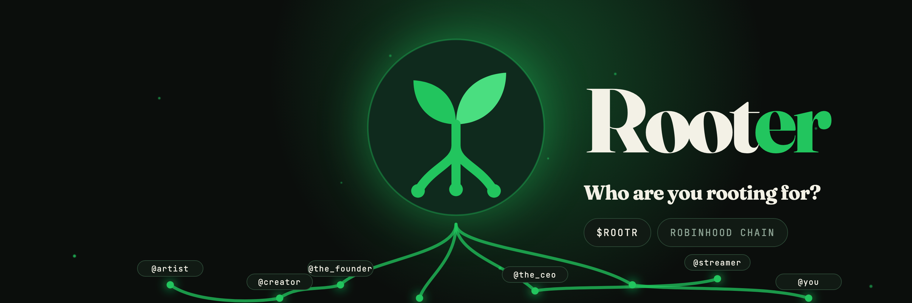
Option 01 · Night, roots network · 3000×1000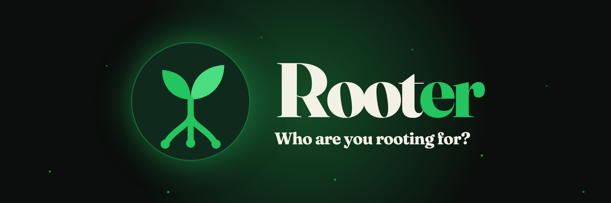
Option 02 · Night, centred · 3000×1000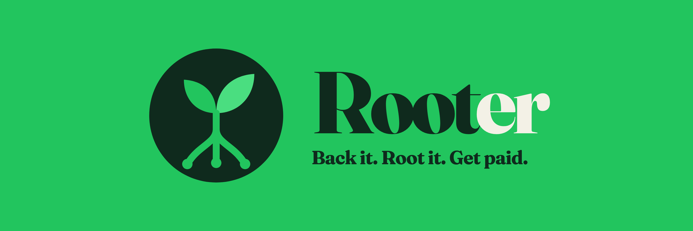
Option 03 · Emerald solid · 3000×1000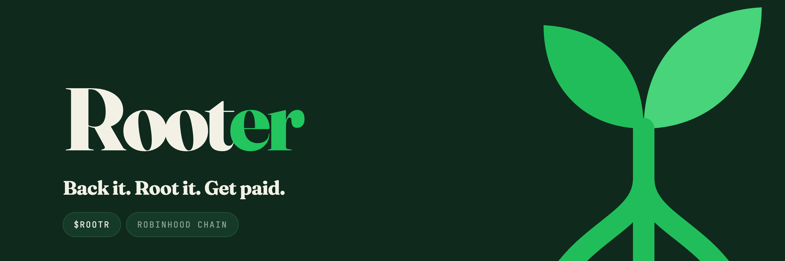
Option 04 · Canopy, cropped mark · 3000×1000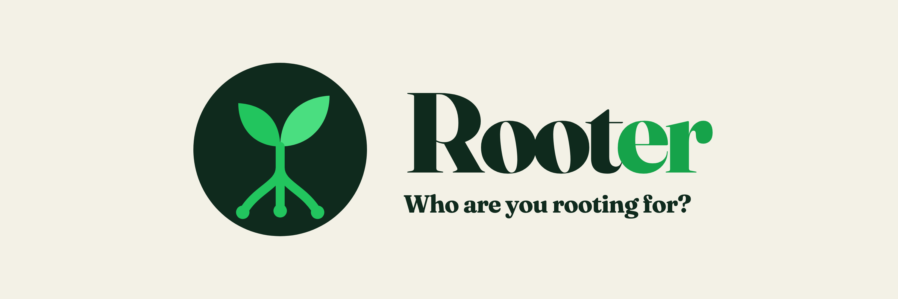
Option 05 · Cream, minimal · 3000×1000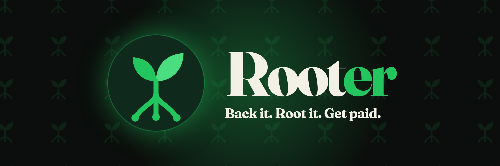
Option 06 · Night, pattern field · 3000×1000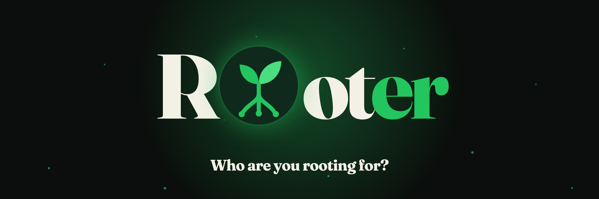
Option 07 · Mark in the word · 3000×1000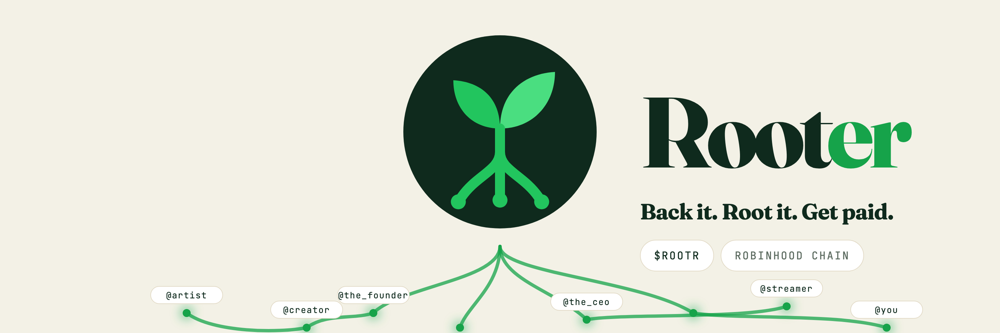
Option 08 · Cream, roots network · 3000×1000X, first set
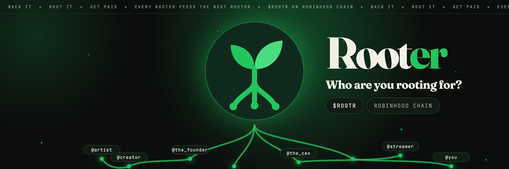
Header, dark · 3000×1000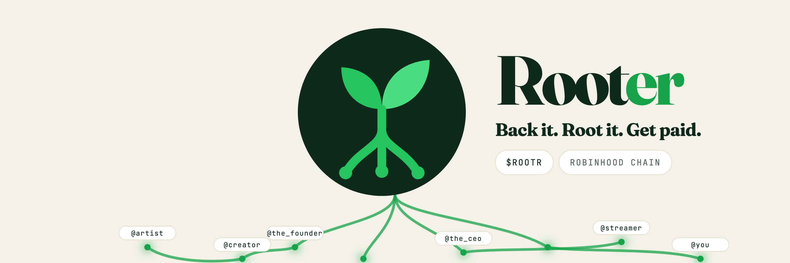
Header, cream · 3000×1000Launch thread
The welcome cover for the first post, then five cards for the thread, in order.
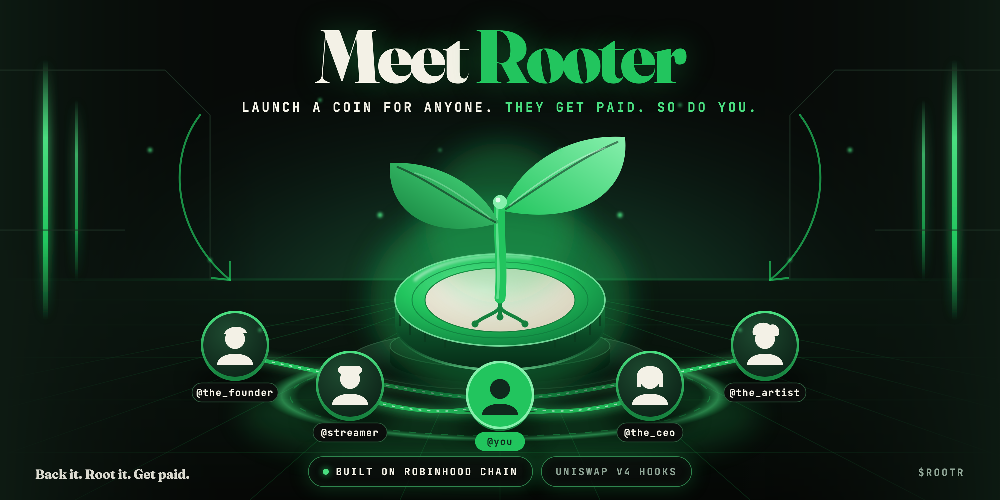
00 · Meet Rooter, welcome cover · 4000×2000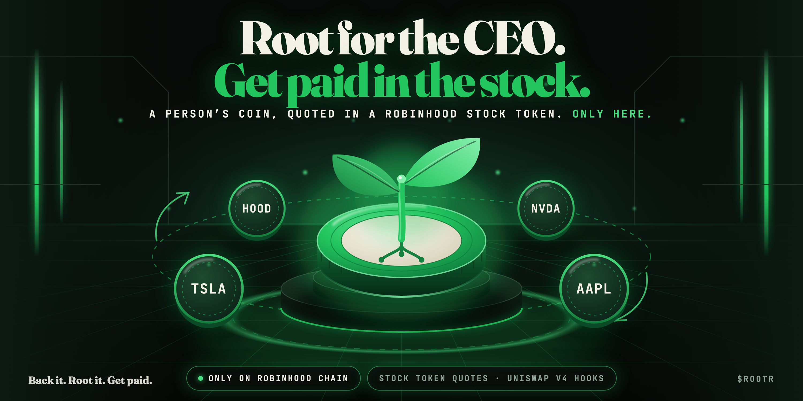
Post 02 · Stock Token quotes · 4000×2000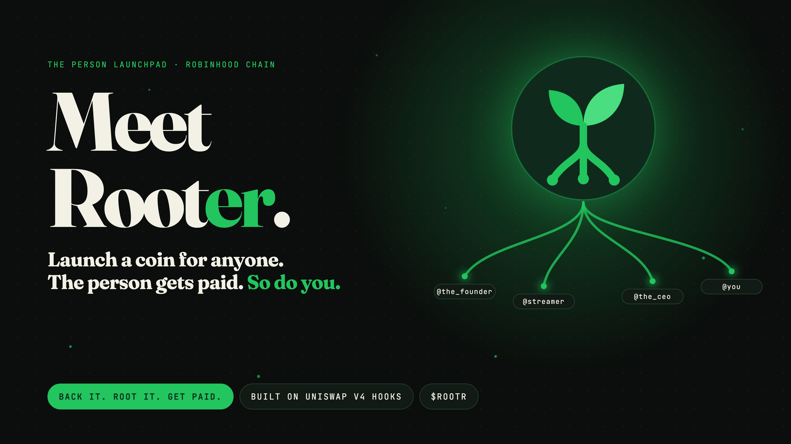
01 · Meet Rooter · 3200×1800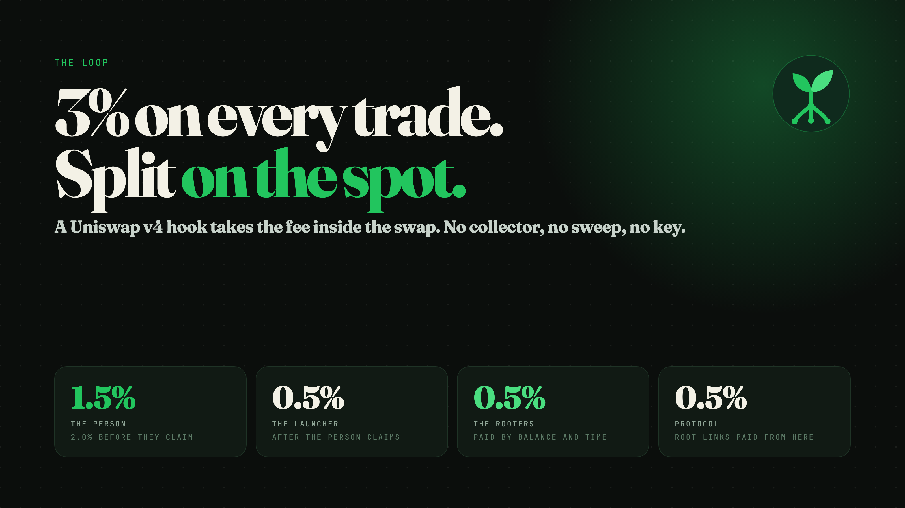
02 · The split · 3200×1800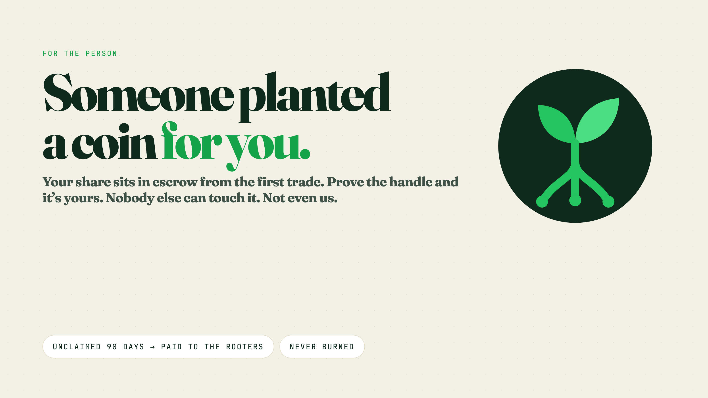
03 · For the person · 3200×1800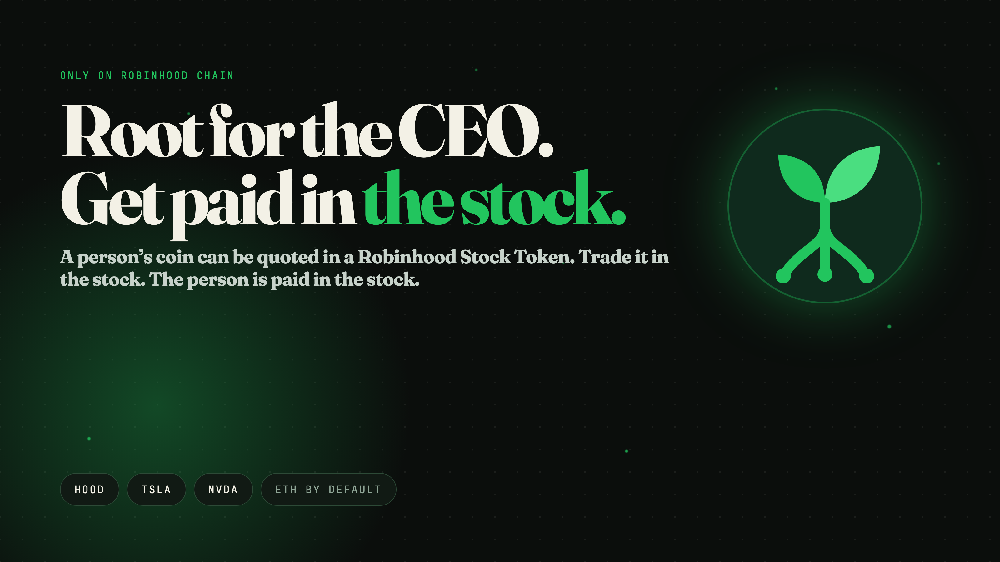
04 · Stock quotes · 3200×1800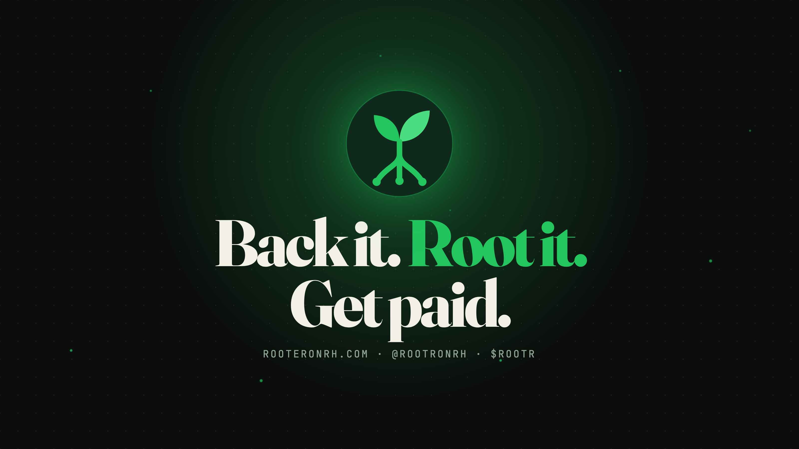
05 · Slogan close · 3200×1800Favicon


Colour
Type
Fraunces 800 for the wordmark and headlines, tracking −3 to −5%. Inter 400 to 600 for interface and body. JetBrains Mono for labels and numbers.
Rules
The project is Rooter. The ticker is $ROOTR. Roots are always emerald. Never stretch, rotate or recolour the mark outside this palette. Clear space: one root length on every side.